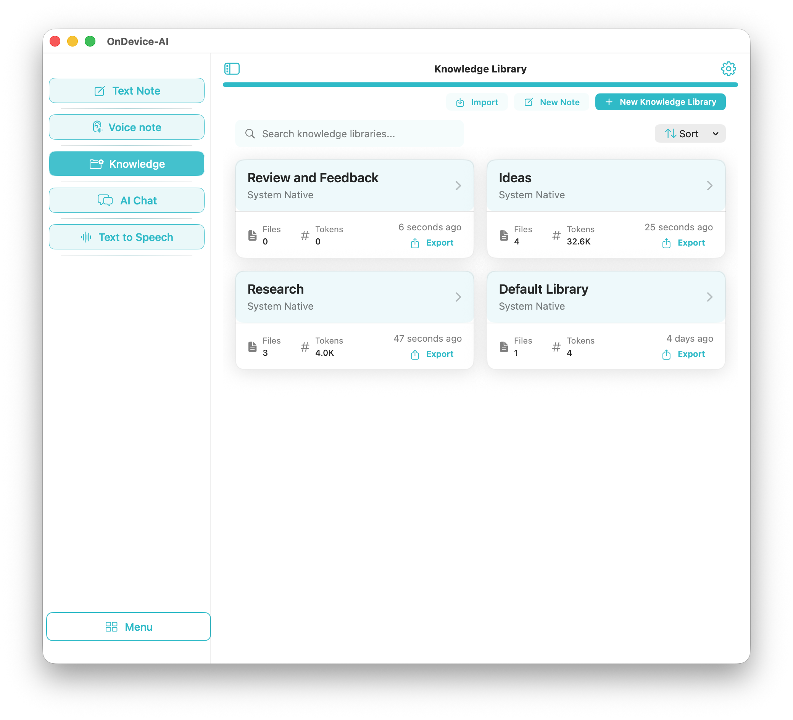

Sharing project context usually costs you control
You spent a week assembling a library. Specification PDFs, a saved research page, a cleaned-up transcript, a set of notes you wrote by hand. A colleague now needs the same material. Today that leaves two options, and both are worse than they look.
The first is a hosted workspace. Upload everything, invite the person, and accept that your project material now lives under someone else's retention policy and someone else's account system. For client work, legal review, medical notes, or unreleased product specs, that single step is often the reason the whole idea stops.
The second is resending the raw files. Nothing leaks to a third party, but your work does not travel either. The recipient gets a folder, not a library. They have to import each file, wait for processing, and rebuild the structure you already built.
A Knowledge Pack is the library, not the folder
On Device AI takes a third path. Any Knowledge Library can be exported as a Knowledge Pack, a single .kllib file that contains the library rather than a copy of its inputs.
Inside the pack are the documents, the library metadata, the chunked text used for retrieval, the embedding vectors for every chunk, a record of which embedding model produced them, and a manifest describing the whole thing. That last part is what makes the pack useful instead of merely portable.

The workflow, start to finish
- Export the library
Open Knowledge, find the library, and choose Export. On iPhone and iPad the finished pack goes to the standard share sheet. On Mac a save panel lets you choose where it lands.
- Decide on a password
The export sheet offers Require password for import. It is off by default, so switch it on deliberately when the material is sensitive. Passwords need at least 8 characters and a matching confirmation, and a strength reading of Weak, Medium, or Strong updates as you type.
- Deliver the file
Because the pack is an ordinary file, the delivery channel is yours to pick: AirDrop, email, a messaging app, a shared drive, a USB stick, or a machine that never touches a network.
- Send the password separately
Use a different channel for the password than the one carrying the file. A pack in email and a password over a phone call means intercepting one gets you nothing.
- Import on the other side
The recipient chooses Import and selects the file. If the pack is password-protected the app asks for the password, and a wrong entry fails cleanly so they can try again. Import creates a new library; if the name already exists they can overwrite it or let the app pick a unique name.
The index travels with the documents
This is the part that separates a Knowledge Pack from a zip file, and it is worth being precise about.
Making documents searchable by meaning requires turning their text into embedding vectors. That work costs time, battery, and sometimes an embedding provider. A Knowledge Pack carries those vectors with it, chunk by chunk, so the receiving device performs no embedding at all. The import writes the library, its documents, and its index in one database transaction, and AI Chat can retrieve from it the moment the import finishes.
The practical consequences: import works with no network connection, a large library opens as fast as a small one, and the recipient's retrieval results match yours rather than approximating them. Hand someone a folder of PDFs and none of that holds.
Integrity is checked at the same time. The app computes SHA-256 hashes for the metadata, the documents, and the index before the pack is written, then verifies them after decryption. A mismatch stops the import instead of quietly loading a damaged library.
What the encryption actually does
Protection is layered, and only the middle layer is optional.
| Layer | When it applies | What it does |
|---|---|---|
| App-level protection | Always | The pack is not a browsable archive. Renaming the file will not turn it into a folder of readable JSON. |
| Password encryption | When you enable it at export | AES-256-GCM over the library contents, with the key derived by PBKDF2-HMAC-SHA256 at 100,000 iterations against a fresh 16-byte random salt. |
| Checksum verification | Always | SHA-256 over the metadata, documents, and index, compared on import. A mismatch refuses the import. |
Two details matter more than the algorithm names. First, the salt is generated per export, so exporting the same library twice with the same password produces two different keys and two different files. Second, the key is derived when it is needed and never written down. No copy of it sits in the pack, in the app, in the keychain, or on a server.
The 100,000-iteration derivation is a deliberate cost. It is slow enough to make guessing a password expensive and fast enough to stay tolerable on an iPhone.
Limits worth knowing before you send one
- Password protection is opt-in. The toggle starts off. An exported pack still carries app-level protection, but if the contents are confidential, turn the password on.
- There is no recovery. Forget the password and the pack is closed for good. Nothing about it exists on a server for support to reset.
- You cannot un-send a pack. Revoking access is what hosted workspaces are genuinely better at. A file you handed to someone stays handed over, which is the honest cost of not needing anyone's server.
- The recipient needs On Device AI. A pack is a file for this app, not a generic archive format.
- Embedding models carry over. The imported library keeps the embedding identity it was built with. If that model was served by a provider the recipient has not configured, the app says so before the library is activated rather than returning weak matches, and the library can be reindexed with a local model instead.
- Free tier has a ceiling. Without Pro, a device can import one pack of up to five documents and only when no library exists yet. Larger packs and additional libraries need Pro. Export is not gated.
Why this is not the same as a shared cloud knowledge base
Hosted knowledge tools are built around a central copy. The library becomes useful after it is uploaded, and it stays useful because the service keeps holding it. Sharing means granting access to that copy, so the material and the permission live in the same place, on infrastructure you do not run.
On Device AI inverts the arrangement. The library is built on your device, the index is computed on your device, and sharing produces an artifact you own outright. The material moves; no permission system needs to exist; no service needs to be reachable for the recipient to read what you sent. On a plane, behind an air gap, or five years from now with the app installed offline, the pack still opens.
That also makes a Knowledge Pack a reasonable backup. Export a library, store the file wherever you keep archives, and restore it later on any of your own devices.
Frequently asked questions
Can I share a knowledge base privately without uploading it to the cloud?
Yes. On Device AI exports a Knowledge Library as a Knowledge Pack, a single .kllib file you deliver yourself through AirDrop, email, a messaging app, a shared drive, or a USB stick. There is no account to join and no server that holds a copy.
Is a Knowledge Pack encrypted?
Every pack carries app-level protection, so it is not a browsable archive. When you enable the password option at export, the library contents are additionally sealed with AES-256-GCM using a key derived by PBKDF2-HMAC-SHA256 at 100,000 iterations against a fresh 16-byte random salt generated for that export.
Does the recipient have to re-index the documents?
No. The pack carries the finished retrieval index, including the chunked text and the embedding vectors, alongside the documents. The imported library is searchable in AI Chat as soon as the import completes, with no re-processing and no network access.
What happens if I forget the Knowledge Pack password?
The pack cannot be opened. The password is never stored in the file, on the device, or on any server, so there is no reset link and no recovery path. Keep it somewhere durable, such as a password manager, before you send the pack.
Which devices support Knowledge Pack export and import?
Export and import work on iPhone, iPad, and Mac. iPhone and iPad hand the file to the standard share sheet, and Mac opens a save panel so you can choose where the pack lands.
Do I need a subscription to import a Knowledge Pack?
Free users can import one pack containing up to five documents, provided they do not already have a Knowledge Library. Importing beyond that, whether a larger pack or an additional library, requires Pro. Export itself is not gated.